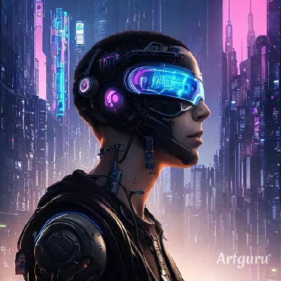

<div class="container">
    <div class="row">
        <div class="col-lg shadow border m-1">
            <div class="text-center m-3">
                <h2>About Me</h2>
                
            </div>
            <div class="text-left">
                <p>Hello! My name is Ismael. I am a backend developer with about two and a half years of experience in Java.</p>
                <p>My journey in the world of technology began in 2019 at the Escola Profissional do Infante. There, I had the opportunity to learn the basics of HTML, CSS, and JS. After completing my course, I decided to study more on my own. Through some books and courses on platforms like Udemy, I learned C and Pascal during my algorithm studies.</p>
                <p>Shortly after, I joined the Escola Profissional de Braga, where I studied Python and C#. However, I learned Java on my own, using documentation and any other free content I could find on the internet. In the process of learning Java for backend development, other passions emerged, such as mobile development, which "forced" me to study Kotlin more thoroughly. Ironically, it might be my favorite programming language, even though I don't use it as much.</p>
                <p>Additionally, I love everything related to security, and this led me to study a lot on the subject, although it was more of a hobby than something I wanted to pursue professionally.</p>
                <p>Anyway, welcome to my portfolio! I hope you enjoy the projects!</p>
            </div>
        </div>
        <div class="col-lg shadow border m-1">
            <div class="text-center">
                <div class="text-center m-3">
                    <h2>Featured Projects</h2>
                </div>
            </div>
        </div>
    </div>
</div>